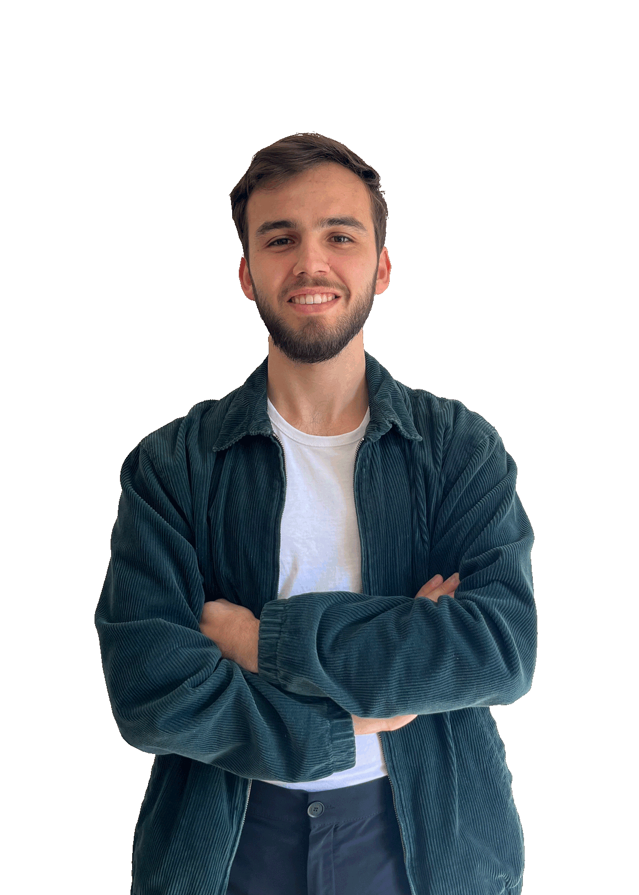

Recherche de stage
Actuellement entrain de compléter ma formation dans l'intelligence artificielle avec un Master Spécialisé à Télécom Paris.
Je suis ingénieur diplômé de l'ENSE3 - Grenoble INP en master Automatique et Systèmes Intelligents.
J'ai un fort attrait pour les sujets de Computer Vision appliqués à l'environnement et à la santé.
Je cherche un stage de 6 mois à partir de juillet 2025.
